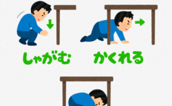
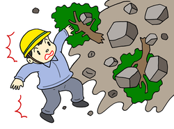
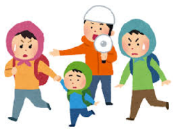

Back
行動に関する防災知識
★地震が起こった直後の対応
自分と家族の身を守ろう
揺れが収まるまで、机の下などに身を隠し、座布団や雑誌などで頭を保護します。
すばやく火を消そう
ガスや石油ストーブの火をすばやく消し、電気器具のコードはコンセントから抜きます。元栓や電気のブレーカーもオフにします。
あわてて外へ飛び出さない
あわてて外へ飛び出すと、落下物や転倒物で危険です。外にいる場合は、建物の中に身を移すようにしましょう。
あわてずに出口を確保しましょう
いつでも外で飛び出せるように窓やドアを早めに開け、モノを挟むなどして次の揺れに備え、避難時の出口を確保してください。
★地震の揺れがが収まった時の対応
避難に躊躇はいらない
(山崩れ・津波に注意！)
山・ガケ崩れや津波の危険地域では、危険は自分で判断しすぐに避難の準備をして行動をとってください。「避難勧告」を待つ必要はありません。
避難は最小限の持ち物で
避難路の状況によっては、移動が困難な場合もあります。最小限の荷物で身軽に避難しましょう。
隣近所に声をかけ合って避難を
ひとりでの避難より、幾人かまとまって避難するほうが精神的にも余裕ができます。
協力し合って救出・救護活動を
移動中も負傷者の状況を観察しながら移動しましょう。
サバイバルへの強い意志を
周りがどうあろうと、「自分が生き残るのだ」というサバイバルへの強い意志が、生き残っていくための道を開きます。
★車に乗っている時の対応
地震を感じたら...
1.スピードを落として左側に寄せ、停車してエンジンを切ります。
2.カーラジオで地震情報を収集して地震の規模を確認します。
3.車から離れる時は、窓を閉めてキーをつけたままで。
※高速道路では、ハンドルが奪われないように注意をし前後の車間を調整してスピードを下げます。脱出は、１キロごとにある避難口から。
クルマは左へ
道路の左側にキーをつけたまま、エンジンを止めて停車しましょう。
★公共交通機関に乗車している時の対応
電車の場合
電車は、震度５以上の地震が発生すると、
ＡＴＳ（自動列車停止装置）が働いて停車します。地下鉄の場合、震度５以上の地震が発生すると、全線停止します。
駅と駅の間で停車した場合は、安全を確認しながら低速度で最寄のホームに進入することになっています。もし駅の構内や車内にいたら、アナウンスや係員の指示に従うほうが安全です。
バスの場合
なるべく身を低くしてしゃがみ、シートの手すりにしがみつきます。
※バスの非常口は、ふつう後部右側の座席の下にあります。
タクシーの場合
自動ドアのタクシーでも、右側のドアは手動で開ける事ができます。
※どうしても窓を割る場合は、靴で思い切りケリ破ります。